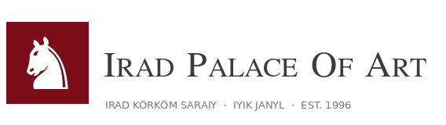
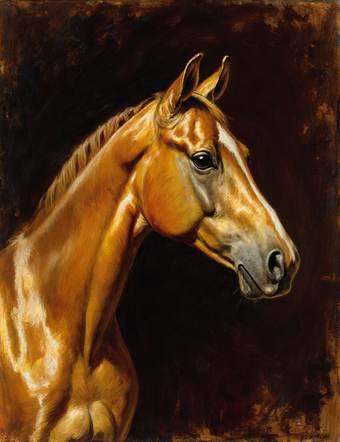
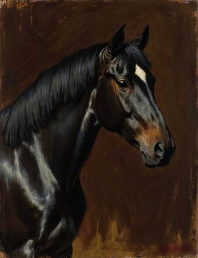
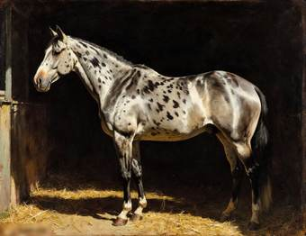
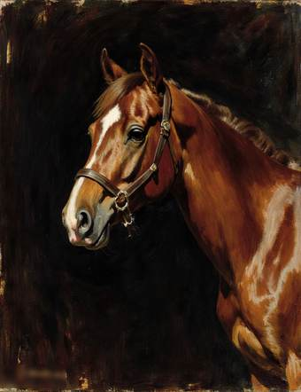
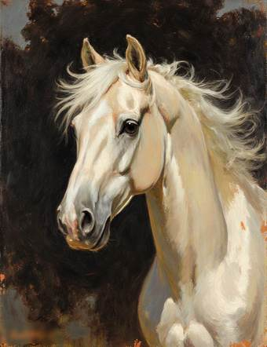

Ermek Saparbekov: Horses
Permanent display · Room 6a, first floor, next to the Ayyubov Hall
Ermek Saparbekov (1878-1951) painted horses and nothing else. The son of a horse trader of the Chu valley, he studied drawing in Tashkent and painting in Paris (1899-1904), where he learned to paint fast and loose, with a loaded brush and the light falling on a coat. He came home in 1905 and for the rest of his life painted the horses of the stud farms, the beys, the Russian officers and, after 1922, the state horse-breeding trusts, for whose studbooks he painted the founding stallions of the Akyel and the Chongtor.
He never painted a person. When the Governor of Semirechye asked him to paint his wife, Saparbekov painted her mare. He titled each painting with the horse's name only. Horses whose names he did not know he numbered: there are at least nineteen Unnamed Horses. In 1937, when Ayyubov and so many others were arrested, he was left alone. "Nobody was ever shot for a horse," he is supposed to have said.
About 300 of his paintings are known. The Palace holds 46, many of them found in the stud farm offices when the state farms were broken up in 1994. The studbook registers he illustrated are kept in the State Archives of Irad (Fond 218).
Gallery


Akbozat
Oil on canvas, 1908. An Akyel stallion of the Chu valley studs, painted for his owner, a Kokand bey's grandson. The first horse Saparbekov painted after Paris.


Kara-Jorgo
Oil on canvas, 1911. A Chongtor ambler from the Talas Alatau, bought by a Russian officer for the Verny races.


Chabdar
Oil on canvas, 1913. A spotted horse of the artist's own stable (chabdar means 'spotted').


Unnamed Horse No. 4
Oil on canvas, 1919. Painted in the hungry years of the civil war, when horses were taken by every side. Saparbekov never learned this horse's name.


Kökjal
Oil on canvas, 1926. Painted for the first studbook of the republican horse-breeding trust.

Current exhibits:
Irad Palace of Art · Cathedral Street 4, Iyık Janyl · Tel. +996 32 22 4 18 07 · info@iradpalaceof.art ·  Tulpar: @palaceofart · Last updated 03.10.2026
Tulpar: @palaceofart · Last updated 03.10.2026